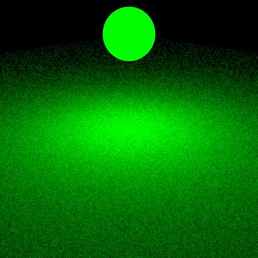
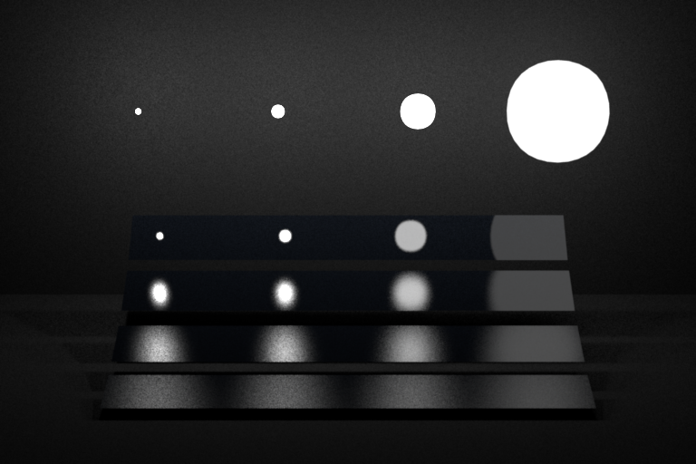
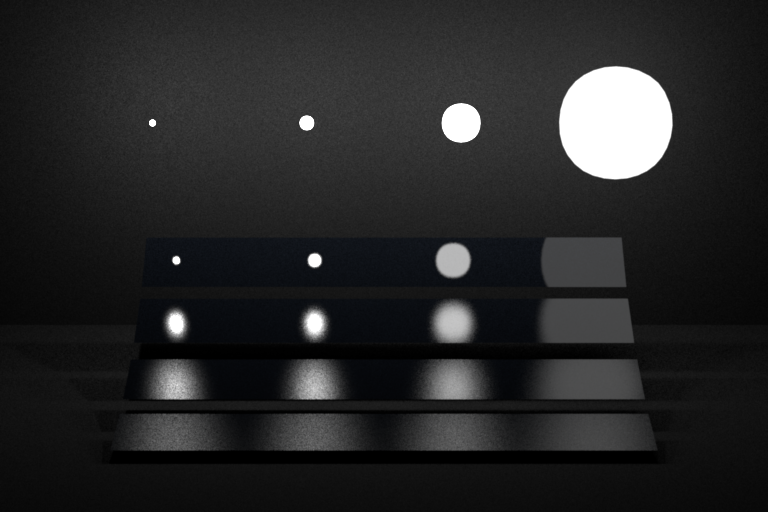
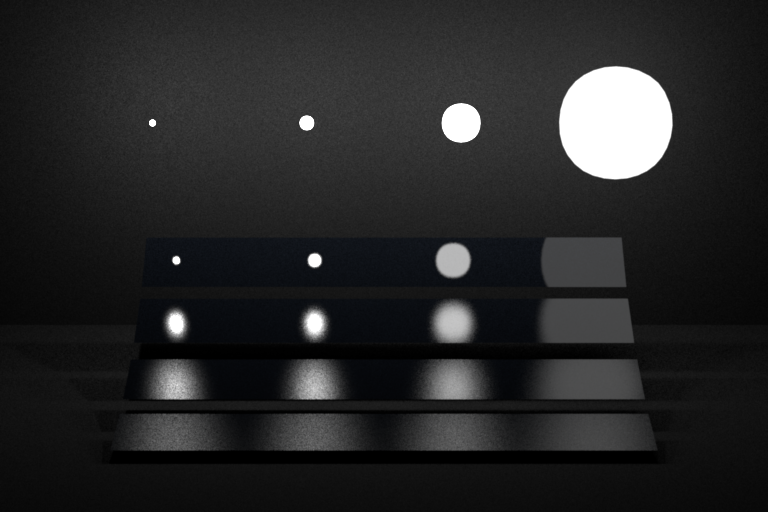

**Homework 3 - Monte Carlo Ray Tracing**
Student Name: Yingzhe Liu
Legi Number:
(Note: please read the [supplementary](#supplementary) section first before working on this report.)
# Part 1: Light Sampling
## Integrator Implementation
**Time spent on this task: 2 days**
**Describe your implementation of `direct_ems`.**
First I implemented the DirectEMS integrator. I followed the equation on the nori website. That is, I first choose a random light in the scene and sample the light. That should give
me light.eval() / light.pdf(). At the beginning, I didn't know that the pdf that Monte Carlo integration uses should also include the probability density of choosing the light. That took
me long to figure out. I also forgot to transform the pdf of the light from surface area to solid angle. Thanks for answering my question about this on the class forum. Then, I get
the BSDF value and the cosine angle. Finally, I include the emitter radiance if the first intersection is on an emitter.
...
## Shape Area Light
**Time spent on this task: 1 day**
**Describe your implementation of `AreaEmitter::eval(...)`.**
For this function, I check the cos value between the direction of a vector pointing away from a point on the light and the normal at that point. If it's greater than 0, that means a
front side is intersected. Else, it's a back side. I return the radiance according to that condition.
...
**Describe your implementation of `AreaEmitter::pdf(...)` and `AreaEmitter::sample(...)`.**
For the pdf, I return $P_\Omega(\vec{\omega}) = \frac{d^2}{cos\theta}p_A(\boldsymbol{x})$. For $p_A(\boldsymbol{x})$, I query it with m_shape->pdfSurface();
...
## Validation
**Comparison: sphere/sphere_pointlights_ems**
**Comparison: sphere/sphere_ems**
**Comparison: sphere/sphere_mesh_ems**
**Comparison: sphere/sphere2_ems**
**Comparison: sphere/sphere2_mesh_ems**
**Comparison: odyssey_ems**
**Comparison: veach_ems**
# Part 2: BRDF Sampling
## Integrator Implementation
**Time spent on this task: 1 day**
**Describe your implementation of `direct_mats`.**
First, I sample the BSDF and get bsdf.eval() / bsdf.pdf() * cosTheta. Then, I construct a ray with the first intersection as the origin and the sampled wi as the direction. I intersect
this ray with the scene and check if there is an intersection as well as if the intersection is with an emitter. If so, I get the radiance from the emitter. Finally, I check if the
first hit is with an emitter. If so, I include the radiance from that emitter. At the beginning, I forgot that the cos angle is already included in bsdf.sample() and accounted for it twice.
...
## Microfacet BRDF
**Time spent on this task: 2 days**
**Describe your implementation of `Microfacet::eval(...)`.**
For the eval() function, I followed exactly the equation from the nori website. I used evalBeckmann() for the Beckmann term, fresnel() for the fresnel term, smithBeckmannG1() *
smithBeckmannG1() for the Smith shadowing term.
...
**Describe your implementation of `Microfacet::sample(...)`.**
For the sample() function, I first rescale sample.x() according to the method in the class slide ACG23_ex3.pdf. Then, I compare sample.x() with ks. If it's less than ks, I sample the
specular part. If it's greater than ks, I sample the diffuse part. For the specular part, I sample a wh according to the Beckmann distribution and reflect wi to get wo. For the diffuse
part, I sample a wo directly with the cosine weighted hemisphere distribution. For the pdf, I follow the equation on the nori website. Thanks for helping me debug on the class forum.
...
## Validation
**Comparison: sphere/sphere_mats**
**Comparison: sphere/sphere2_mats**

**Comparison: odyssey_mats**
**Comparison: veach_mats**
# Part 3: Multiple Importance Sampling
## Integrator Implementation
**Time spent on this task: 2h**
**Describe your implementation of `direct_mis`.**
For this multiple importance integrator, I combined DirectEMS and DirectMATS. First, I get the radiance from sampling the emitter. At the same time, I also get the emitter radiance
if the first hit is with an emitter and $pdf_{em}(\omega_{i,e})$. I also record $\omega_{i,e}$ for future use. Then, I get the radiance from sampling the bsdf. At this time, I get
$pdf_{mat}(\omega_{i,m})$, $pdf_{mat}(\omega_{i,e})$, and $pdf_{em}(\omega_{i,m})$. Combining the PDFs, I get $w_{em}$ and $w_{mat}$. Finally, I return the total radiance according
to the equation on the nori website.
...
## Validation
**Comparison: odyssey_mis**
**Comparison: veach_mis**

# Part 4: Four-way Comparison
**Odyssey**
**Veach**
# Feedback
**Use this section to provide feedback about this assignment (each task, the handout, Nori, etc.). We appreciate your opinions to help improve future homeworks and projects.**
This assignment is a little bit time consuming. I spent a lot of time trying to debug some small parts. If there are more tips like "compare cosTheta with 0 using <=" and
"account for choosing a random emitter in the Monte Carlo pdf," it would be better.
...
# Supplementary
* For each task, please note down the time you spent working through it and use at least a few sentences to describe your implementation. If applicable, also report the problems you encounter (e.g. whether or how it's solved, what is the difficult part).
* Please let us know to what extent your code is working (e.g. you only managed to work through part of this assignment, or your solution doesn't operate as expected in some corner cases). We encourage you to share your thinking process, and points will be granted based on your description even if the code is not 100% functioning.
* Nori generates both EXR and PNG format output. Please use PNG for image comparison in the report.
* This report template uses [Markdeep](https://casual-effects.com/markdeep/), which supports Markdown syntax in HTML file. For example usage, please refer to the [official demo document](https://casual-effects.com/markdeep/features.md.html).
* LaTeX is also supported for typing mathematical formulas:
$$
L_o(\mathbf{x}, \omega_o) = \int_{\Omega} L_i(\mathbf{x},\omega_i)\, f(\mathbf{x}, \omega_i, \omega_o)\, |\cos\theta_i|\, \mathrm{d}\omega_i
$$


 
